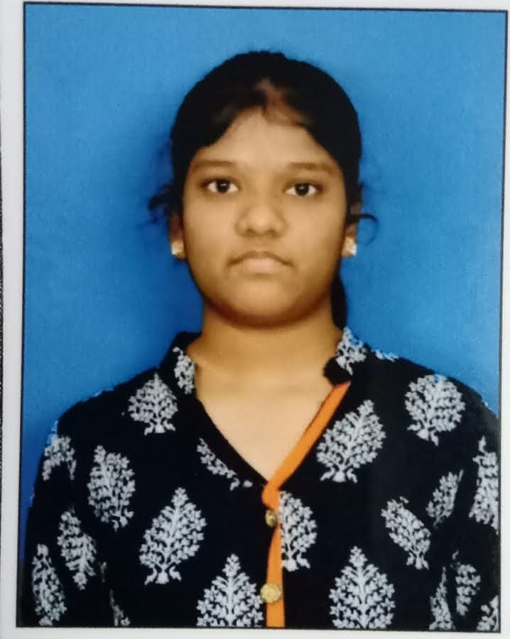

DEVARAPALLI VARSHITHA
Email: varshithadevarapalli07@gmail.com | Phone: +91 7013512503
Location: Vijayawada, 521151, India
CAREER OBJECTIVE
To apply my skills and knowledge in a dynamic work environment, striving for professional growth while making meaningful contributions.
EDUCATION
- B.Tech in Electronics and Communication Engineering
Prasad V. Potluri Siddhartha Institute of Technology | Completed 3-2 (2022)
- Intermediate - Sri Chaitanya Junior College
Percentage: 90.5% | 2020–2022
- SSC - Sri Chaitanya Techno School
CGPA: 9.8/10 | 2019–2020
INTERNSHIP
Internship in VLSI Design using Advanced FPGA
Worked on multiple VLSI projects, gaining hands-on experience with BASYS 3 FPGA board and implementing real-time systems.
CERTIFICATIONS
- System Design Through Verilog - NPTEL
- Internet of Things Foundation - Infosys Springboard
- Arduino - Spoken Tutorial
- Google Cloud Computing Certificate
- Basics of Python - Infosys Springboard
- PCB Training - APSSDC
- Java Foundation - Infosys Springboard
- DSA in Java - BYTS India
PROJECT
Water Leak Detector
Developed a system using sensors and buzzers to detect and alert water leakage to prevent waste. Designed cost-effective and efficient circuitry.
CO-CURRICULAR ACTIVITIES
- Participated in Technical Quiz - IETE Forum, PVPSIT
- Presented Paper at SITAR-2K24, PVPSIT
SKILLS
Languages: C, Java, Python
Domains: Digital Logic Design, VLSI Design
Tools: MATLAB, Xilinx Vivado (BASYS 3), Arduino IDE